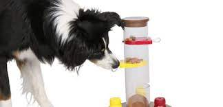

BORDER COLLIE
Existe una serie de ejercicios más usados para la estimulación mental.
Sembrar comida en zonas de difícil visualización, como plantas, pelotas, ropa…
e incluso con la luz apagada.
Esconder trocitos de comida por distintas partes de la casa o jardín,
y tu peludo disfrutará con estos juguetes y evitaras muchos problemas de conducta.
Juguetes caseros
Podemos hacer juguetes en casa, fáciles y económicos, con botellas, cajas,
toallas, todo depende de tu imaginación.

El kong
Es un juguete fantástico y muy útil para los perros que sufren ansiedad por
separación es un juguete totalmente seguro puesto que podemos dejar a nuestro perro
sin supervisión;
es muy sencillo solo debes introducir golosinas o incluso paté
dentro del agujero y el perro utilizando las patas y el hocico irá sacando el alimento.
Además de entrenerles un buen rato,el kong les relaja y les hace pensar en las
diferentes posturas del kong para vaciar su contenido.
Practica de obediencia
Es un método perfecto para estimular la mente de tu perro y enseñarle cómo debe
comportarse, se puede practicar dar la pata, sentarse o ponerse de pie. Todo es
posible si lo repites las suficientes veces y mediante el uso del refuerzo positivo.
Es recomendable hacer sesiones de entre 10 y 15 minutos de entrenamiento para no sobrecargar
a tu mascota.
También se puede utilizar el clicker, un sistema muy divertido.
Inicio
Características De La Raza
Edad del Perro Vs La Edad Humana
Alimentos Naturales Recomendados
Ejercicios Para Su Estimulación
Maria Valentina Bautista Bermúdez
9B